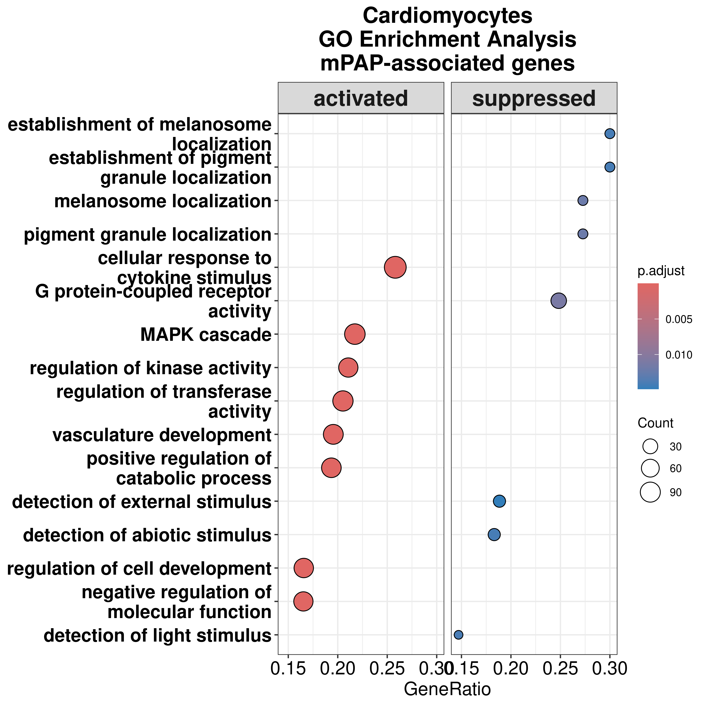
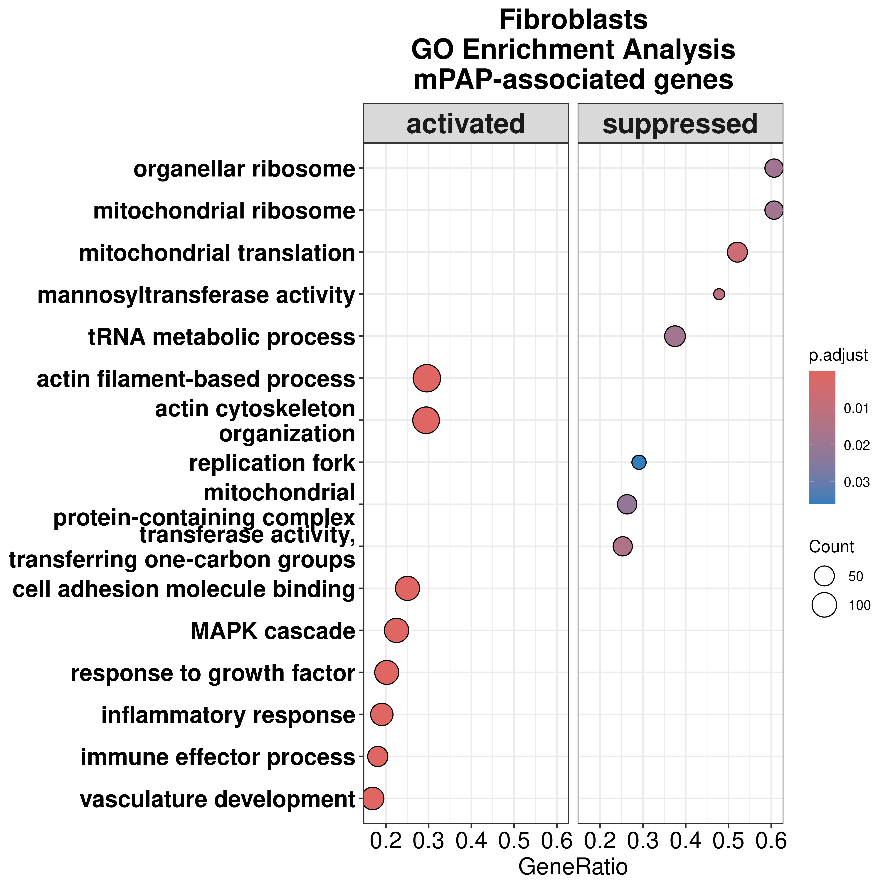
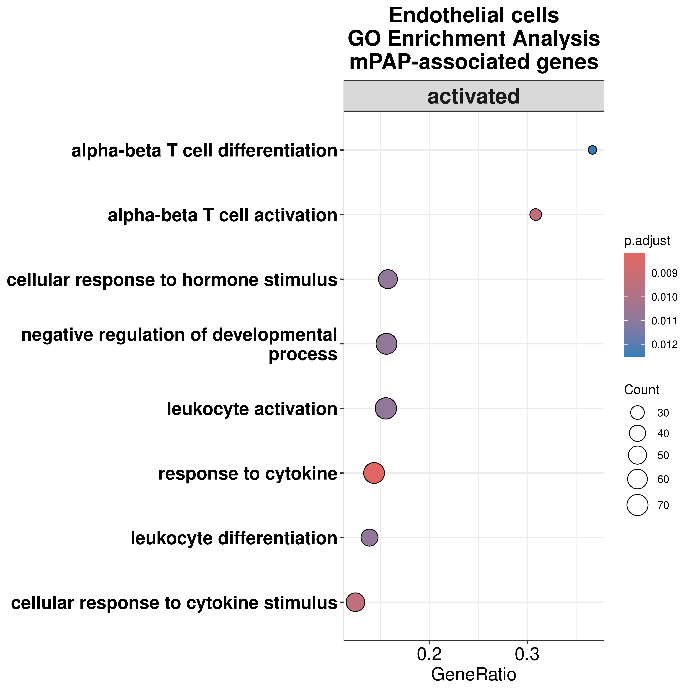
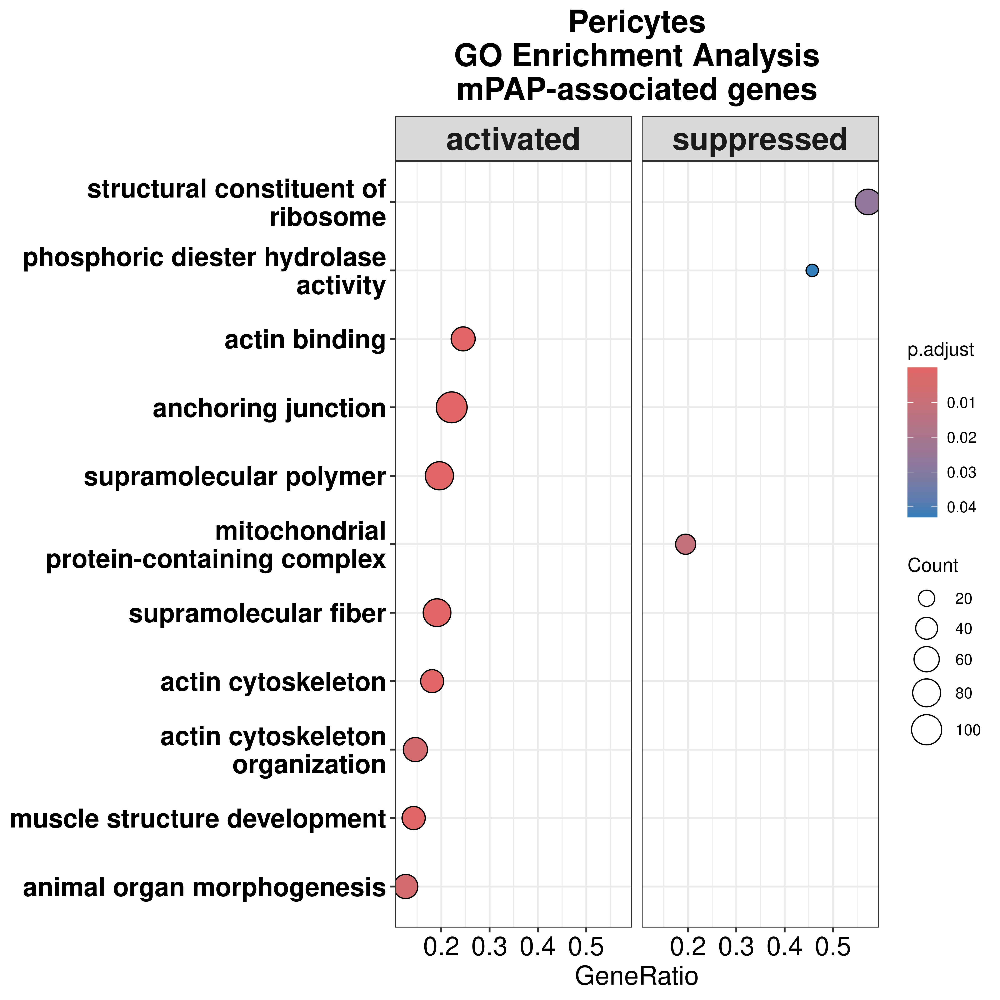
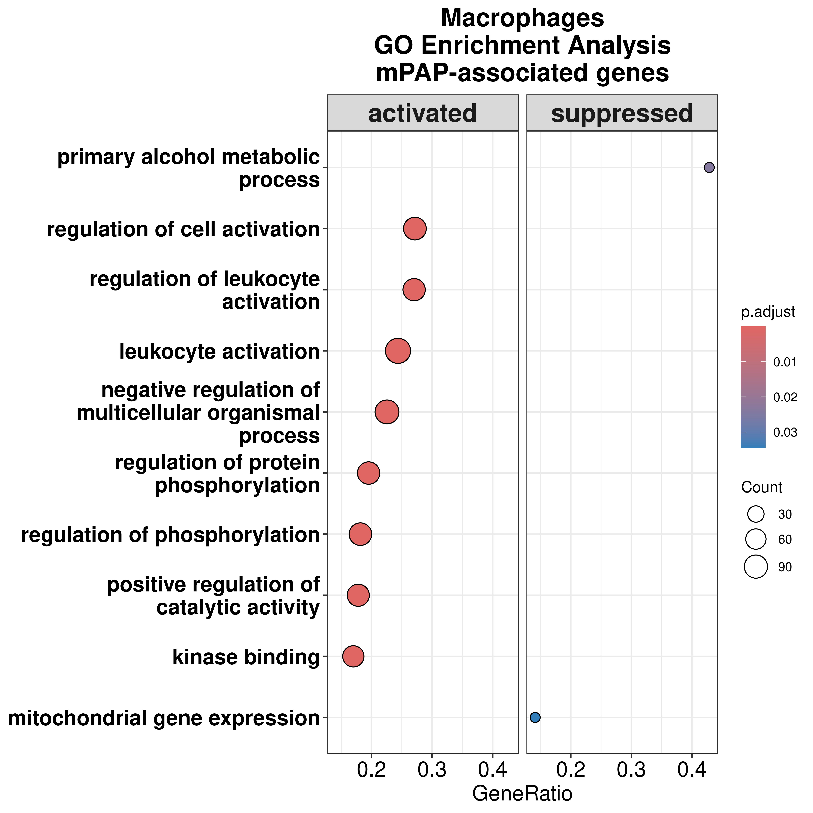
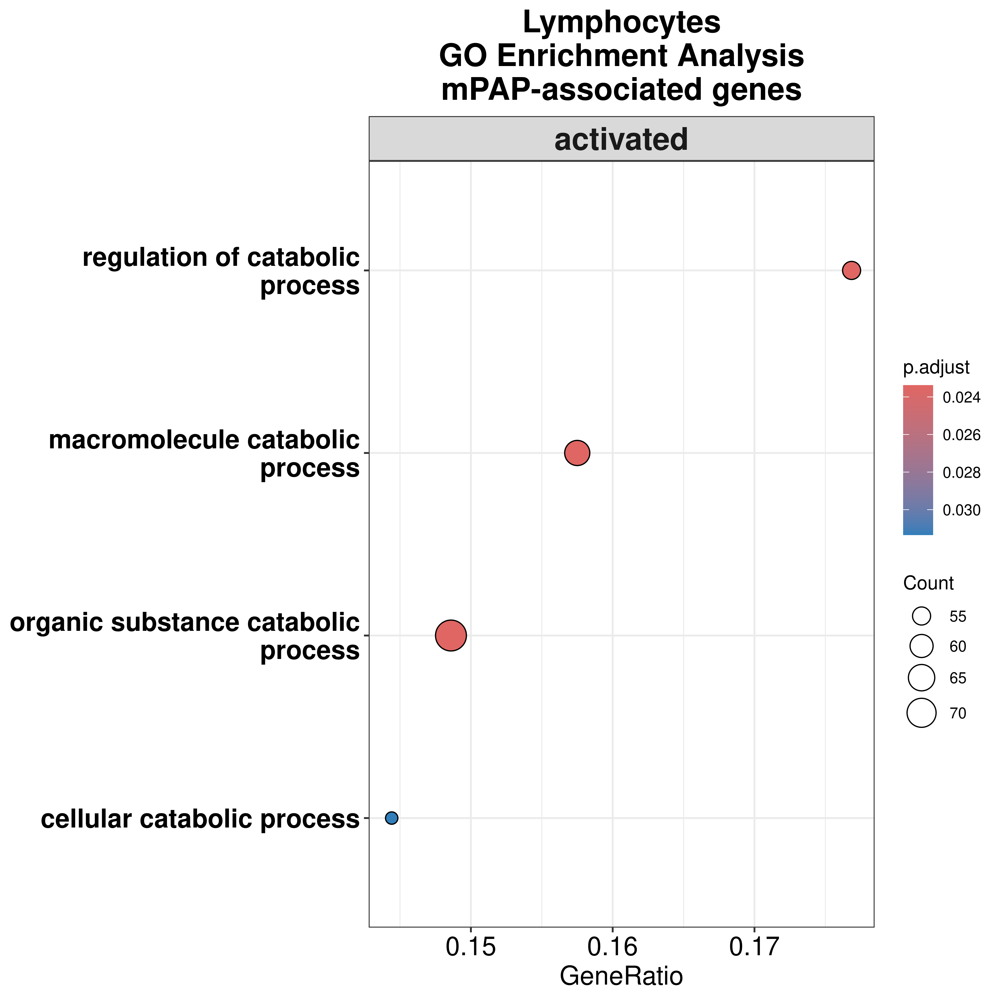
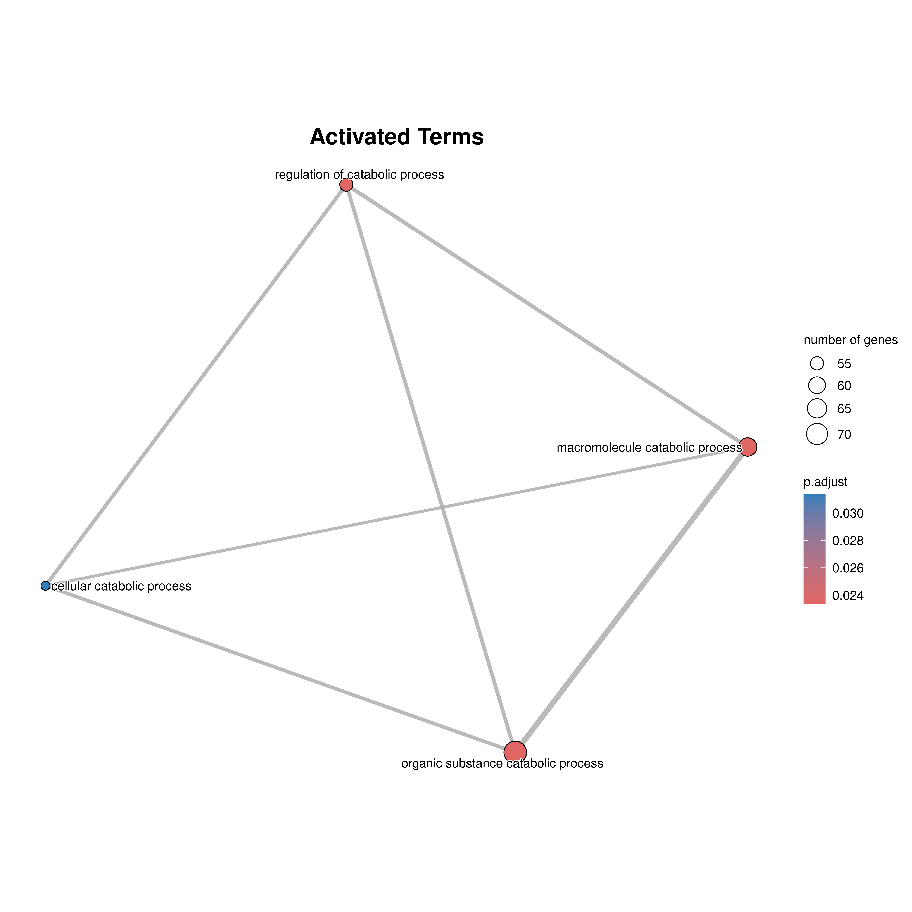
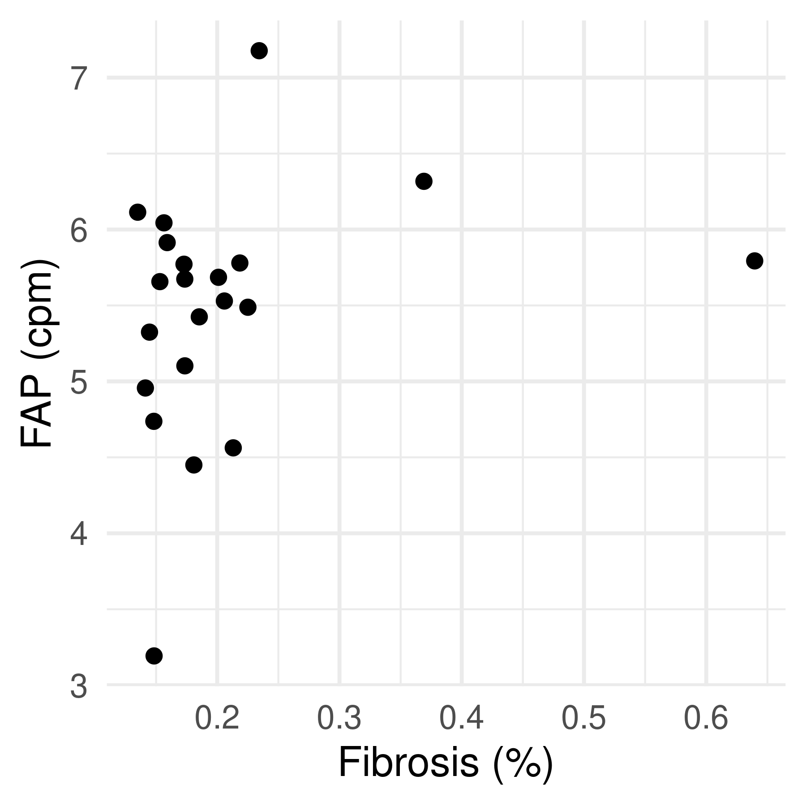
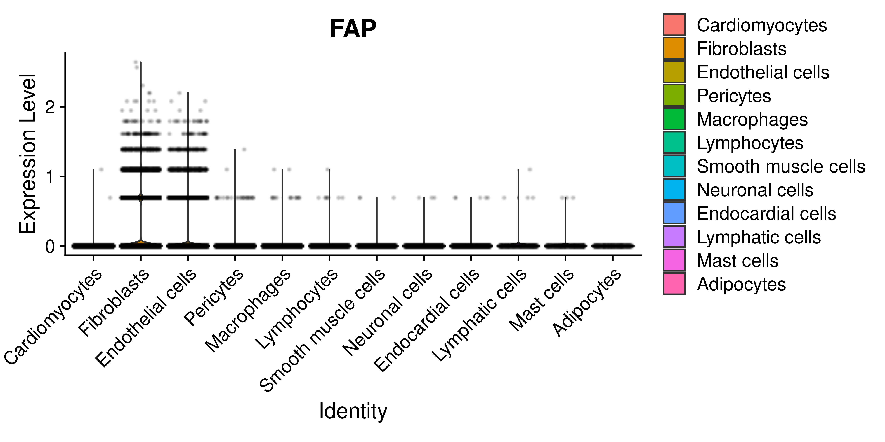

Differential expression analysis in all cell types using fibrosis
GinoBonazza (ginoandrea.bonazza@usz.ch)
30 April, 2025
Last updated: 2025-04-30
Checks: 7 0
Knit directory: DCM_snRNAseq/
This reproducible R Markdown analysis was created with workflowr (version 1.7.1). The Checks tab describes the reproducibility checks that were applied when the results were created. The Past versions tab lists the development history.
Great! Since the R Markdown file has been committed to the Git repository, you know the exact version of the code that produced these results.
Great job! The global environment was empty. Objects defined in the global environment can affect the analysis in your R Markdown file in unknown ways. For reproduciblity it’s best to always run the code in an empty environment.
The command set.seed(20240606) was run prior to running
the code in the R Markdown file. Setting a seed ensures that any results
that rely on randomness, e.g. subsampling or permutations, are
reproducible.
Great job! Recording the operating system, R version, and package versions is critical for reproducibility.
Nice! There were no cached chunks for this analysis, so you can be confident that you successfully produced the results during this run.
Great job! Using relative paths to the files within your workflowr project makes it easier to run your code on other machines.
Great! You are using Git for version control. Tracking code development and connecting the code version to the results is critical for reproducibility.
The results in this page were generated with repository version 5aedad0. See the Past versions tab to see a history of the changes made to the R Markdown and HTML files.
Note that you need to be careful to ensure that all relevant files for
the analysis have been committed to Git prior to generating the results
(you can use wflow_publish or
wflow_git_commit). workflowr only checks the R Markdown
file, but you know if there are other scripts or data files that it
depends on. Below is the status of the Git repository when the results
were generated:
Ignored files:
Ignored: .Rhistory
Ignored: .Rproj.user/
Ignored: output/Cell_cell_communication/
Ignored: output/Chaffin_2022/
Ignored: output/Comparison_RV_bulk_RNAseq/
Ignored: output/Genes_Luxembourg/
Ignored: output/Koenig_2022/
Ignored: output/SSc_PAH/
Untracked files:
Untracked: GRCh38-2020-A_build/
Untracked: analysis/Cardiomyocytes_DA_DE_26_2.Rmd
Untracked: analysis/Cell_cell_communication.Rmd
Untracked: analysis/Chaffin_2022.Rmd
Untracked: analysis/Comparison_RV_bulk_RNAseq.Rmd
Untracked: analysis/DA_DE_all_cell_types_and_parameters.Rmd
Untracked: analysis/DE_Group_all_cell_types.Rmd
Untracked: analysis/DE_all_cell_types_mPAP.Rmd
Untracked: analysis/DE_mPAP_all_cell_types.Rmd.Rmd
Untracked: analysis/Endothelial_cells_SGLT2_I.Rmd
Untracked: analysis/Fibroblasts_DA_DE_26.Rmd
Untracked: analysis/Fibroblasts_subclustering.Rmd
Untracked: analysis/Genes_Luxembourg.Rmd
Untracked: analysis/Koenig_2022.Rmd
Untracked: analysis/Mass_Spec_RV_dysf.Rmd
Untracked: analysis/Olink_RV_dysf.Rmd
Untracked: analysis/Olink_SSc_PAH.Rmd
Untracked: analysis/Olink_SSc_PAH_draft.Rmd
Untracked: analysis/Selection_genes_histology.Rmd
Untracked: analysis/TOM/
Untracked: analysis/VennDiagram.2024-09-16_14-12-56.160498.log
Untracked: analysis/VennDiagram.2024-09-16_14-13-17.340014.log
Untracked: analysis/VennDiagram.2024-09-16_14-13-57.942673.log
Untracked: analysis/VennDiagram.2024-09-16_14-22-50.621507.log
Untracked: analysis/VennDiagram.2024-09-16_14-24-47.010131.log
Untracked: analysis/VennDiagram.2024-09-18_11-22-29.278827.log
Untracked: analysis/VennDiagram.2025-03-25_17-41-35.50458.log
Untracked: analysis/VennDiagram.2025-03-25_17-41-41.199096.log
Untracked: analysis/VennDiagram.2025-03-25_17-41-59.64245.log
Untracked: analysis/VennDiagram.2025-03-25_17-45-11.922474.log
Untracked: analysis/VennDiagram.2025-03-25_17-50-36.483812.log
Untracked: analysis/VennDiagram.2025-03-25_17-56-46.244322.log
Untracked: analysis/VennDiagram.2025-03-25_17-58-30.74362.log
Untracked: analysis/VennDiagram.2025-03-26_15-54-09.244636.log
Untracked: analysis/omnipathr-log/
Untracked: code/Add_metadata.R
Untracked: code/Check DYSF.R
Untracked: code/Clustering_genes.R
Untracked: code/DE_5_percent.Rmd
Untracked: code/DE_5_percent.html
Untracked: code/DE_5_percent/
Untracked: code/DE_CM_test1.R
Untracked: code/DE_no_401.Rmd
Untracked: code/DE_no_401.html
Untracked: code/DE_no_401/
Untracked: code/Differential abundance test1.R
Untracked: code/Differential_Expression_edgeR_All.Rmd
Untracked: code/Differential_Expression_edgeR_All_2.Rmd
Untracked: code/Differential_Expression_edgeR_All_2.html
Untracked: code/Differential_Expression_edgeR_All_Age.Rmd
Untracked: code/Differential_Expression_edgeR_All_Age_2.Rmd
Untracked: code/Differential_Expression_edgeR_All_Age_2.html
Untracked: code/Differential_Expression_edgeR_All_groups.Rmd
Untracked: code/Differential_Expression_edgeR_All_groups.html
Untracked: code/Differential_Expression_edgeR_All_groups_2.Rmd
Untracked: code/Differential_Expression_edgeR_All_groups_2.html
Untracked: code/Differential_Expression_edgeR_All_groups_3.Rmd
Untracked: code/Differential_Expression_edgeR_All_groups_3.html
Untracked: code/PCA and CCA analysis test.R
Untracked: code/Pseudobulk DCM HC.R
Untracked: code/Published_heart_datasets_RV_vs_LV.Rmd
Untracked: code/QC_integration_annotation_orig.Rmd
Untracked: code/UpSet_plot_DEGs.Rmd
Untracked: code/Volcano_highlighted_genes.R
Untracked: code/ezInteractiveTable.Rmd
Untracked: code/ezInteractiveTable.html
Untracked: code/old.R
Untracked: data/Cellbender_output/
Untracked: data/Cellranger_output/
Untracked: data/DCM_Clinical_data.xlsx
Untracked: data/DCM_Clinical_data_26.xlsx
Untracked: data/Homo_sapiens.GRCh38.93.gtf
Untracked: data/Human_plasma_proteome.xlsx
Untracked: data/Massons_quantification.xlsx
Untracked: data/Published_datasets/
Untracked: data/Raw/
Untracked: data/SSc-PAH/
Untracked: data/gencode.v46.chr_patch_hapl_scaff.annotation.gtf
Untracked: data/gencode.v46.chr_patch_hapl_scaff.basic.annotation.gtf
Untracked: data/refdata-gex-GRCh38-2020-A/
Untracked: omnipathr-log/
Untracked: output/CM_lncRNAs/
Untracked: output/Cardiomyocytes_DA_DE/
Untracked: output/Cardiomyocytes_DA_DE_26/
Untracked: output/Cardiomyocytes_DA_DE_26_2/
Untracked: output/Cardiomyocytes_subclustering/
Untracked: output/Cardiomyocytes_subclustering_26/
Untracked: output/Comparison_LV/
Untracked: output/DA_DE_all_cell_types_and_parameters/
Untracked: output/DE_Fibrosis_all_cell_types/
Untracked: output/DE_Group_all_cell_types/
Untracked: output/DE_all_cell_types_mPAP/
Untracked: output/DE_mPAP_all_cell_types/
Untracked: output/Differential_expression_edgeR_All/
Untracked: output/Differential_expression_edgeR_All_Age/
Untracked: output/Endothelial_cells_SGLT2_I/
Untracked: output/Endothelial_cells_published_datasets/
Untracked: output/Fibroblasts_DA_DE_26/
Untracked: output/Fibroblasts_subclustering/
Untracked: output/Mass_Spec_RV_dysf/
Untracked: output/Olink_RV_dysf/
Untracked: output/Olink_SSc_PAH/
Untracked: output/Olink_SSc_PAH_draft/
Untracked: output/QC_integration_annotation/
Untracked: output/QC_integration_annotation_26/
Untracked: output/Reichart_DE_DCMvsHC/
Untracked: output/Selection_genes_histology/
Untracked: output/UntitledR.R
Untracked: reference_sources/
Unstaged changes:
Modified: analysis/CM_lncRNAs.Rmd
Modified: analysis/Cardiomyocytes_DA_DE.Rmd
Modified: analysis/Cardiomyocytes_DA_DE_26.Rmd
Modified: analysis/Comparison_LV.Rmd
Modified: analysis/DE_mPAP_all_cell_types.Rmd
Deleted: analysis/Differential_Expression_edgeR_All.Rmd
Deleted: analysis/Differential_Expression_edgeR_All_Age.Rmd
Modified: analysis/Endothelial_cells_published_datasets.rmd
Modified: analysis/QC_integration_annotation_26.Rmd
Modified: analysis/Reichart_DE_DCMvsHC.Rmd
Modified: analysis/SSc_PAH.Rmd
Note that any generated files, e.g. HTML, png, CSS, etc., are not included in this status report because it is ok for generated content to have uncommitted changes.
These are the previous versions of the repository in which changes were
made to the R Markdown
(analysis/DE_Fibrosis_all_cell_types.Rmd) and HTML
(docs/DE_Fibrosis_all_cell_types.html) files. If you’ve
configured a remote Git repository (see ?wflow_git_remote),
click on the hyperlinks in the table below to view the files as they
were in that past version.
| File | Version | Author | Date | Message |
|---|---|---|---|---|
| Rmd | 5aedad0 | GinoBonazza | 2025-04-30 | wflow_publish("analysis/DE_Fibrosis_all_cell_types.Rmd") |
Setup
# Get current file name to make folder
current_file <- "DE_Fibrosis_all_cell_types"
# Load libraries
library(here)
library(readr)
library(readxl)
library(xlsx)
library(Seurat)
library(DropletUtils)
library(Matrix)
library(scDblFinder)
library(scCustomize)
library(dplyr)
library(ggplot2)
library(magrittr)
library(tidyverse)
library(reshape2)
library(S4Vectors)
library(SingleCellExperiment)
library(pheatmap)
library(png)
library(gridExtra)
library(knitr)
library(scales)
library(RColorBrewer)
library(Matrix.utils)
library(tibble)
library(ggplot2)
library(scater)
library(patchwork)
library(statmod)
library(ArchR)
library(clustree)
library(harmony)
library(gprofiler2)
library(clusterProfiler)
library(org.Hs.eg.db)
library(AnnotationHub)
library(ReactomePA)
library(statmod)
library(edgeR)
library(speckle)
library(EnhancedVolcano)
library(decoupleR)
library(OmnipathR)
library(dorothea)
library(enrichplot)
library(png)
library(reactable)
library(UpSetR)
library(ComplexHeatmap)
library(rtracklayer)
library(cowplot)
#Output paths
output_dir_data <- here::here("output", current_file)
if (!dir.exists(output_dir_data)) dir.create(output_dir_data)
if (!dir.exists(here::here("docs", "figure"))) dir.create(here::here("docs", "figure"))
output_dir_figs <- here::here("docs", "figure", paste0(current_file, ".Rmd"))
if (!dir.exists(output_dir_figs)) dir.create(output_dir_figs)DE Fibrosis
Load seurat object
DCM_RV_integrated <- readRDS(here::here("output", "QC_integration_annotation_26", "DCM_RV_integrated.rds"))Fibrosis_data <- read_excel(here::here("data", "Massons_quantification.xlsx"))
colnames(Fibrosis_data)[3] <- "Fibrosis_percent"
Fibrosis_data <- Fibrosis_data %>%
dplyr::filter(Sample %in% unique(DCM_RV_integrated$Sample))
Fibrosis_data_DCM <- dplyr::filter(Fibrosis_data, Group=="DCM")
add_metadata <- left_join(DCM_RV_integrated[["Sample"]], dplyr::select(Fibrosis_data, c("Sample", "Fibrosis_percent")))
row.names(add_metadata) <- row.names(DCM_RV_integrated[[]])
DCM_RV_integrated <- AddMetaData(DCM_RV_integrated, metadata = add_metadata)
rm(add_metadata)
table(DCM_RV_integrated$Fibrosis_percent)
0.110939951640826 0.114442563170204 0.134928774662919 0.141236038786034
3260 8309 8222 7227
0.144604519541541 0.148148614714262 0.148337649147378 0.153083109200409
7285 7995 4752 4606
0.156429752066116 0.15903049079408 0.17280048100964 0.173457903489224
3799 7897 6741 6838
0.173519859229701 0.18087776606238 0.185304020479094 0.20101841085887
6686 6514 7086 7118
0.205839410504668 0.213103366363263 0.218487084512027 0.225066379656095
2941 8349 4305 5932
0.23431799847785 0.268141715826274 0.369052269271427 0.63961290875985
7623 3633 8107 6439 # Initialize an empty data frame for storing differential abundance results
differential_abundance <- data.frame()
props <- getTransformedProps(DCM_RV_integrated$cell_type, DCM_RV_integrated$Sample, transform="logit")
props$Counts <- props$Counts[, Fibrosis_data_DCM$Sample, drop = FALSE]
props$TransformedProps <- props$TransformedProps[, Fibrosis_data_DCM$Sample, drop = FALSE]
props$Proportions <- props$Proportions[, Fibrosis_data_DCM$Sample, drop = FALSE]
Fibrosis_data_DCM <- Fibrosis_data_DCM %>%
arrange(Sample, colnames(props$Proportions))
design <- model.matrix(~ Fibrosis_data_DCM[["Fibrosis_percent"]])
fit <- lmFit(props$TransformedProps, design)
fit <- eBayes(fit, robust=TRUE)
differential_abundance <- topTable(fit, n = Inf, coef = 2)
differential_abundance$cell_state <- rownames(differential_abundance)
rm(props, fit)
write.csv(differential_abundance, file = here::here(output_dir_data, "Differential_Abundance_Fibrosis.csv"), quote=F, row.names = F)
reactable(differential_abundance,
filterable = TRUE,
searchable = TRUE,
showPageSizeOptions = TRUE)cluster_names <- c("Cardiomyocytes", "Fibroblasts", "Endothelial cells", "Pericytes", "Macrophages", "Lymphocytes", "Smooth muscle cells", "Neuronal cells", "Endocardial cells")Remove genes expressed in <1% of cells
results_DE_fibrosis <- list()
signif_DE_fibrosis <- list()
for (cluster in cluster_names) {
data <- subset(DCM_RV_integrated, cell_type == cluster & Sample %in% Fibrosis_data_DCM$Sample)
expr_matrix <- GetAssayData(object = data, assay = "RNA", slot = "counts")
non_zero_cells <- rowSums(expr_matrix > 0)
total_cells <- ncol(expr_matrix)
percent_cells <- (non_zero_cells / total_cells) * 100
percent_stats <- data.frame(gene = rownames(expr_matrix), percentCells = percent_cells)
keep_genes <- rownames(dplyr::filter(percent_stats, percentCells > 1))
data <- data[which(rownames(data) %in% keep_genes),]
rm(keep_genes, non_zero_cells, expr_matrix, total_cells, percent_cells)
pseudocounts <- Seurat2PB(data, sample="Sample", cluster = "cell_type")
colnames(pseudocounts) <- pseudocounts$samples$sample
pseudocounts <- pseudocounts[, match(Fibrosis_data_DCM$Sample, pseudocounts$samples$sample)]
all(Fibrosis_data_DCM$Sample == pseudocounts$samples$sample)
keep_samples <- pseudocounts$samples$lib.size > 5e4
pseudocounts <- pseudocounts[, keep_samples]
keep_genes <- filterByExpr(pseudocounts)
pseudocounts <- pseudocounts[keep_genes, ]
rm(keep_samples, keep_genes, data)
pseudocounts <- normLibSizes(pseudocounts)
Fibrosis_data_subset <- Fibrosis_data_DCM %>%
dplyr::filter(Sample %in% pseudocounts$samples$sample)
design <- model.matrix(~ Fibrosis_data_subset[["Fibrosis_percent"]])
pseudocounts <- estimateDisp(pseudocounts, design)
fit <- glmQLFit(pseudocounts, design, robust=TRUE)
fit <- glmQLFTest(fit, coef = 2)
results_DE_fibrosis[[cluster]] <- topTags(fit, n = Inf)$table
results_DE_fibrosis[[cluster]] <- merge(results_DE_fibrosis[[cluster]], percent_stats[, c("gene", "percentCells")], by = "gene", all.x = FALSE)
results_DE_fibrosis[[cluster]]$up_down <- ifelse(
results_DE_fibrosis[[cluster]]$logFC > 0.5 & results_DE_fibrosis[[cluster]]$FDR < 0.05, "Increased",
ifelse(results_DE_fibrosis[[cluster]]$logFC < -0.5 & results_DE_fibrosis[[cluster]]$FDR < 0.05, "Decreased",
"Not significant"
)
)
signif_DE_fibrosis[[cluster]] <- results_DE_fibrosis[[cluster]] %>%
dplyr::filter(FDR < 0.05) %>%
dplyr::arrange(FDR)
}Volcano plots
get_legend <- function(my_plot) {
tmp <- ggplotGrob(my_plot)
legend <- tmp$grobs[[which(sapply(tmp$grobs, function(x) x$name) == "guide-box")]]
return(legend)
}volcano <- list()
for (i in seq_along(results_DE_fibrosis)) {
keyvals <- rep("grey", nrow(results_DE_fibrosis[[i]]))
names(keyvals) <- rep("Not significant", nrow(results_DE_fibrosis[[i]]))
keyvals[results_DE_fibrosis[[i]]$up_down == "Increased"] <- "#A63A2A"
names(keyvals)[keyvals == "#A63A2A"] <- "Increased"
keyvals[results_DE_fibrosis[[i]]$up_down == "Decreased"] <- "#004C8C"
names(keyvals)[keyvals == "#004C8C"] <- "Decreased"
volcano[[i]] <- EnhancedVolcano(results_DE_fibrosis[[i]],
lab = results_DE_fibrosis[[i]]$gene,
x = "logFC",
y = "FDR",
labSize = 0,
legendLabSize = 15,
titleLabSize = 16,
subtitleLabSize = 14,
axisLabSize = 12,
captionLabSize = 9,
pointSize = 1,
FCcutoff = 0.5,
pCutoff = 0.05,
ylim = c(0, 5),
colAlpha = 1,
drawConnectors = FALSE,
subtitle = NULL,
title = names(results_DE_fibrosis)[i],
colCustom = keyvals
) + theme(legend.position = "none")
names(volcano)[i] <- names(results_DE_fibrosis)[i]
}
# Extract the legend from the first plot
legend <- cowplot::get_legend(volcano[[1]] + theme(legend.position = "right"))
# Combine the individual volcano plots
combined_plot <- patchwork::wrap_plots(volcano, ncol = 5)
# Use ggdraw and draw_plot to overlay the legend in the bottom-right corner
final_plot <- cowplot::ggdraw() +
cowplot::draw_plot(combined_plot, 0, 0, 1, 1) + # Place the combined plot to fill the whole canvas
cowplot::draw_plot(legend, 0.77, 0.15, 0.25, 0.25) # Position the legend in the bottom-right
# Print the final plot
print(final_plot)
GSEA
reorder_GO_by_pvalue <- function(enrichGO_result) {
go_results <- enrichGO_result@result
go_results_sorted <- go_results[order(go_results$p.adjust), ]
enrichGO_result@result <- go_results_sorted
return(enrichGO_result)
}classify_terms <- function(df) {
df$sign <- ifelse(df$NES > 0, "activated", "suppressed")
return(df)
}cluster_names_2 <- c("Cardiomyocytes", "Fibroblasts", "Endothelial cells", "Pericytes", "Macrophages", "Lymphocytes", "Smooth muscle cells", "Neuronal cells", "Endocardial cells")ranked_genes <- list()
GSEA_all <- list()
for (i in seq_along(cluster_names)) {
gene_counts <- rowSums(subset(DCM_RV_integrated, cell_type == cluster_names_2[i])@assays$RNA@counts > 0)
universe_genes <- names(gene_counts[gene_counts >= 3])
universe_entrez <- bitr(universe_genes, fromType = "SYMBOL", toType = "ENTREZID", OrgDb = org.Hs.eg.db)$ENTREZID
rm(gene_counts)
up_genes <- filter(signif_DE_fibrosis[[i]], logFC > 0.5)$gene
up_genes <- bitr(up_genes, fromType="SYMBOL", toType="ENTREZID", OrgDb="org.Hs.eg.db")$ENTREZID
down_genes <- filter(signif_DE_fibrosis[[i]], logFC < -0.5)$gene
down_genes <- bitr(down_genes, fromType="SYMBOL", toType="ENTREZID", OrgDb="org.Hs.eg.db")$ENTREZID
ranked_genes[[i]] <- results_DE_fibrosis[[i]]
names(ranked_genes)[i] <- cluster_names[i]
ranked_genes[[i]]$metric <- ranked_genes[[i]]$logFC*-log10(ranked_genes[[i]]$PValue)
entrezid <- bitr(ranked_genes[[i]]$gene, fromType="SYMBOL", toType="ENTREZID", OrgDb="org.Hs.eg.db", drop = TRUE)
ranked_genes[[i]] <- merge(ranked_genes[[i]], entrezid, by.x = "gene", by.y = "SYMBOL")
ranked_genes[[i]] <- ranked_genes[[i]][!duplicated(ranked_genes[[i]]$metric), ]
write.csv(ranked_genes[[i]], file = here::here(output_dir_data, paste0(cluster_names[i], "_ranked_genes.csv")), quote=F, row.names = F)
genelist <- ranked_genes[[i]]$metric
names(genelist) <- ranked_genes[[i]]$ENTREZID
genelist <- genelist[order(genelist, decreasing = T)]
GSEA_all[i] <- gseGO(geneList = genelist,
OrgDb = org.Hs.eg.db,
ont = "ALL",
keyType = "ENTREZID",
nPermSimple = 1000000,
minGSSize = 10,
eps = 0)
GSEA_all[[i]] <- reorder_GO_by_pvalue(GSEA_all[[i]])
names(GSEA_all)[i] <- cluster_names[i]
saveRDS(GSEA_all[i], here::here(output_dir_data, paste0(cluster_names[i], "_GSEA_GO_Fibrosis.rds")))
}
rm(universe_genes, universe_entrez, up_genes, down_genes, genelist)
saveRDS(ranked_genes, here::here(output_dir_data, "ranked_genes_list_Fibrosis.rds"))
saveRDS(GSEA_all, here::here(output_dir_data, "GSEA_all_list_Fibrosis.rds"))GSEA_all <- readRDS(here::here(output_dir_data, "GSEA_all_list_Fibrosis.rds"))GSEA_simplified <- simplify(
GSEA_all[["Cardiomyocytes"]],
cutoff = 0.75,
by = "p.adjust",
select_fun = min,
measure = "Wang",
semData = NULL
)
GSEA_simplified <- reorder_GO_by_pvalue(GSEA_simplified)
dotplot(GSEA_simplified, showCategory = 8, split=".sign", title = paste0("Cardiomyocytes", "\nGO Enrichment Analysis", "\nmPAP-associated genes"),
label_format = 30, font.size = 15) +
theme(plot.title = element_text( face = "bold", size = 18, hjust = 0.5),
axis.text.y = element_text(face = "bold"),
strip.text = element_text(face = "bold", size = 18)) +
facet_grid(.~.sign)
GSEA_simplified@result <- classify_terms(GSEA_simplified@result)
activated_terms <- subset(GSEA_simplified@result, sign == "activated")
suppressed_terms <- subset(GSEA_simplified@result, sign == "suppressed")
GSEA_activated <- GSEA_simplified
GSEA_activated@result <- activated_terms
GSEA_activated <- pairwise_termsim(GSEA_activated)
GSEA_suppressed <- GSEA_simplified
GSEA_suppressed@result <- suppressed_terms
GSEA_suppressed <- pairwise_termsim(GSEA_suppressed)
p1 <- emapplot(GSEA_activated, showCategory = 100, cex_label_category = 0.7, min_edge = 0.15) +
ggtitle("Activated Terms") +
theme(plot.title = element_text(face = "bold", size = 18, hjust = 0.5))
p2 <- emapplot(GSEA_suppressed, showCategory = 100, cex_label_category = 0.7, min_edge = 0.15) +
ggtitle("Suppressed Terms") +
theme(plot.title = element_text(face = "bold", size = 18, hjust = 0.5))
combined_plot <- p1 | p2
print(combined_plot)
rm(GSEA_simplified, activated_terms, suppressed_terms, GSEA_activated, GSEA_suppressed, p1, p2)GSEA_simplified <- simplify(
GSEA_all[["Fibroblasts"]],
cutoff = 0.75,
by = "p.adjust",
select_fun = min,
measure = "Wang",
semData = NULL
)
GSEA_simplified <- reorder_GO_by_pvalue(GSEA_simplified)
dotplot(GSEA_simplified, showCategory = 8, split=".sign", title = paste0("Fibroblasts", "\nGO Enrichment Analysis", "\nmPAP-associated genes"),
label_format = 30, font.size = 15) +
theme(plot.title = element_text( face = "bold", size = 18, hjust = 0.5),
axis.text.y = element_text(face = "bold"),
strip.text = element_text(face = "bold", size = 18)) +
facet_grid(.~.sign)
GSEA_simplified@result <- classify_terms(GSEA_simplified@result)
activated_terms <- subset(GSEA_simplified@result, sign == "activated")
suppressed_terms <- subset(GSEA_simplified@result, sign == "suppressed")
GSEA_activated <- GSEA_simplified
GSEA_activated@result <- activated_terms
GSEA_activated <- pairwise_termsim(GSEA_activated)
GSEA_suppressed <- GSEA_simplified
GSEA_suppressed@result <- suppressed_terms
GSEA_suppressed <- pairwise_termsim(GSEA_suppressed)
p1 <- emapplot(GSEA_activated, showCategory = 70, cex_label_category = 0.7, min_edge = 0.20) +
ggtitle("Activated Terms") +
theme(plot.title = element_text(face = "bold", size = 18, hjust = 0.5))
p2 <- emapplot(GSEA_suppressed, showCategory = 70, cex_label_category = 0.7, min_edge = 0.20) +
ggtitle("Suppressed Terms") +
theme(plot.title = element_text(face = "bold", size = 18, hjust = 0.5))
combined_plot <- p1 | p2
print(combined_plot)
rm(GSEA_simplified, activated_terms, suppressed_terms, GSEA_activated, GSEA_suppressed, p1, p2)GSEA_simplified <- simplify(
GSEA_all[["Endothelial cells"]],
cutoff = 0.75,
by = "p.adjust",
select_fun = min,
measure = "Wang",
semData = NULL
)
GSEA_simplified <- reorder_GO_by_pvalue(GSEA_simplified)
dotplot(GSEA_simplified, showCategory = 8, split=".sign", title = paste0("Endothelial cells", "\nGO Enrichment Analysis", "\nmPAP-associated genes"),
label_format = 40, font.size = 15) +
theme(plot.title = element_text( face = "bold", size = 18, hjust = 0.5),
axis.text.y = element_text(face = "bold"),
strip.text = element_text(face = "bold", size = 18)) +
facet_grid(.~.sign)
GSEA_simplified@result <- classify_terms(GSEA_simplified@result)
activated_terms <- subset(GSEA_simplified@result, sign == "activated")
suppressed_terms <- subset(GSEA_simplified@result, sign == "suppressed")
GSEA_activated <- GSEA_simplified
GSEA_activated@result <- activated_terms
GSEA_activated <- pairwise_termsim(GSEA_activated)
GSEA_suppressed <- GSEA_simplified
GSEA_suppressed@result <- suppressed_terms
#GSEA_suppressed <- pairwise_termsim(GSEA_suppressed)
p1 <- emapplot(GSEA_activated, showCategory = 100, cex_label_category = 0.7, min_edge = 0.15) +
ggtitle("Activated Terms") +
theme(plot.title = element_text(face = "bold", size = 18, hjust = 0.5))
#p2 <- emapplot(GSEA_suppressed, showCategory = 100, cex_label_category = 0.7, min_edge = 0.15) +
ggtitle("Suppressed Terms") +
theme(plot.title = element_text(face = "bold", size = 18, hjust = 0.5))NULLcombined_plot <- p1
print(combined_plot)
rm(GSEA_simplified, activated_terms, suppressed_terms, GSEA_activated, GSEA_suppressed, p1, p2)GSEA_simplified <- simplify(
GSEA_all[["Pericytes"]],
cutoff = 0.75,
by = "p.adjust",
select_fun = min,
measure = "Wang",
semData = NULL
)
GSEA_simplified <- reorder_GO_by_pvalue(GSEA_simplified)
dotplot(GSEA_simplified, showCategory = 8, split=".sign", title = paste0("Pericytes", "\nGO Enrichment Analysis", "\nmPAP-associated genes"),
label_format = 30, font.size = 15) +
theme(plot.title = element_text( face = "bold", size = 18, hjust = 0.5),
axis.text.y = element_text(face = "bold"),
strip.text = element_text(face = "bold", size = 18)) +
facet_grid(.~.sign)
GSEA_simplified@result <- classify_terms(GSEA_simplified@result)
activated_terms <- subset(GSEA_simplified@result, sign == "activated")
suppressed_terms <- subset(GSEA_simplified@result, sign == "suppressed")
GSEA_activated <- GSEA_simplified
GSEA_activated@result <- activated_terms
GSEA_activated <- pairwise_termsim(GSEA_activated)
GSEA_suppressed <- GSEA_simplified
GSEA_suppressed@result <- suppressed_terms
GSEA_suppressed <- pairwise_termsim(GSEA_suppressed)
p1 <- emapplot(GSEA_activated, showCategory = 100, cex_label_category = 0.7, min_edge = 0.15) +
ggtitle("Activated Terms") +
theme(plot.title = element_text(face = "bold", size = 18, hjust = 0.5))
p2 <- emapplot(GSEA_suppressed, showCategory = 100, cex_label_category = 0.7, min_edge = 0.15) +
ggtitle("Suppressed Terms") +
theme(plot.title = element_text(face = "bold", size = 18, hjust = 0.5))
combined_plot <- p1 | p2
print(combined_plot)
rm(GSEA_simplified, activated_terms, suppressed_terms, GSEA_activated, GSEA_suppressed, p1, p2)GSEA_simplified <- simplify(
GSEA_all[["Macrophages"]],
cutoff = 0.75,
by = "p.adjust",
select_fun = min,
measure = "Wang",
semData = NULL
)
GSEA_simplified <- reorder_GO_by_pvalue(GSEA_simplified)
dotplot(GSEA_simplified, showCategory = 8, split=".sign", title = paste0("Macrophages", "\nGO Enrichment Analysis", "\nmPAP-associated genes"),
label_format = 30, font.size = 15) +
theme(plot.title = element_text( face = "bold", size = 18, hjust = 0.5),
axis.text.y = element_text(face = "bold"),
strip.text = element_text(face = "bold", size = 18)) +
facet_grid(.~.sign)
GSEA_simplified@result <- classify_terms(GSEA_simplified@result)
activated_terms <- subset(GSEA_simplified@result, sign == "activated")
suppressed_terms <- subset(GSEA_simplified@result, sign == "suppressed")
GSEA_activated <- GSEA_simplified
GSEA_activated@result <- activated_terms
GSEA_activated <- pairwise_termsim(GSEA_activated)
GSEA_suppressed <- GSEA_simplified
GSEA_suppressed@result <- suppressed_terms
GSEA_suppressed <- pairwise_termsim(GSEA_suppressed)
p1 <- emapplot(GSEA_activated, showCategory = 70, cex_label_category = 0.7, min_edge = 0.20) +
ggtitle("Activated Terms") +
theme(plot.title = element_text(face = "bold", size = 18, hjust = 0.5))
p2 <- emapplot(GSEA_suppressed, showCategory = 70, cex_label_category = 0.7, min_edge = 0.20) +
ggtitle("Suppressed Terms") +
theme(plot.title = element_text(face = "bold", size = 18, hjust = 0.5))
combined_plot <- p1 | p2
print(combined_plot)
rm(GSEA_simplified, activated_terms, suppressed_terms, GSEA_activated, GSEA_suppressed, p1, p2)GSEA_simplified <- simplify(
GSEA_all[["Lymphocytes"]],
cutoff = 0.75,
by = "p.adjust",
select_fun = min,
measure = "Wang",
semData = NULL
)
GSEA_simplified <- reorder_GO_by_pvalue(GSEA_simplified)
dotplot(GSEA_simplified, showCategory = 8, split=".sign", title = paste0("Lymphocytes", "\nGO Enrichment Analysis", "\nmPAP-associated genes"),
label_format = 30, font.size = 15) +
theme(plot.title = element_text( face = "bold", size = 18, hjust = 0.5),
axis.text.y = element_text(face = "bold"),
strip.text = element_text(face = "bold", size = 18)) +
facet_grid(.~.sign)
GSEA_simplified@result <- classify_terms(GSEA_simplified@result)
activated_terms <- subset(GSEA_simplified@result, sign == "activated")
GSEA_activated <- GSEA_simplified
GSEA_activated@result <- activated_terms
GSEA_activated <- pairwise_termsim(GSEA_activated)
p1 <- emapplot(GSEA_activated, showCategory = 100, cex_label_category = 0.7, min_edge = 0.15) +
ggtitle("Activated Terms") +
theme(plot.title = element_text(face = "bold", size = 18, hjust = 0.5))
print(p1)
rm(GSEA_simplified, activated_terms, suppressed_terms, GSEA_activated, GSEA_suppressed, p1, p2)data <- subset(DCM_RV_integrated, cell_type == "Fibroblasts" & Sample %in% Fibrosis_data_DCM$Sample)
expr_matrix <- GetAssayData(object = data, assay = "RNA", slot = "counts")
non_zero_cells <- rowSums(expr_matrix > 0)
total_cells <- ncol(expr_matrix)
percent_cells <- (non_zero_cells / total_cells) * 100
percent_stats <- data.frame(gene = rownames(expr_matrix), percentCells = percent_cells)
keep_genes <- rownames(dplyr::filter(percent_stats, percentCells > 1))
data <- data[which(rownames(data) %in% keep_genes),]
rm(keep_genes, non_zero_cells, expr_matrix, total_cells, percent_cells)
pseudocounts <- Seurat2PB(data, sample="Sample", cluster = "cell_type")
colnames(pseudocounts) <- pseudocounts$samples$sample
pseudocounts <- pseudocounts[, match(Fibrosis_data_DCM$Sample, pseudocounts$samples$sample)]
all(Fibrosis_data_DCM$Sample == pseudocounts$samples$sample)[1] TRUEkeep_samples <- pseudocounts$samples$lib.size > 5e4
pseudocounts <- pseudocounts[, keep_samples]
keep_genes <- filterByExpr(pseudocounts)
pseudocounts <- pseudocounts[keep_genes, ]
rm(keep_samples, keep_genes, data)
pseudocounts <- normLibSizes(pseudocounts)
counts <- cpm(pseudocounts, log = TRUE)
metadata_matched <- Fibrosis_data_DCM[match(colnames(counts), Fibrosis_data_DCM$Sample), ]
stopifnot(all(colnames(counts) == metadata_matched$Sample))
order_idx <- order(metadata_matched$Group)
counts <- counts[, order_idx]
metadata_matched <- metadata_matched[order_idx, ]
data <- data.frame(FAP = t(counts)[,"FAP"],
Fibrosis = metadata_matched$Fibrosis_percent)
ggplot(data, aes_string(x = "Fibrosis", y = "FAP")) +
geom_point() +
theme_minimal() +
labs(
x = "Fibrosis (%)",
y = "FAP (cpm)"
)
vlnplot <- VlnPlot(DCM_RV_integrated, group.by = "cell_type", features = "FAP", add.noise = F)
vlnplot[[1]]$layers[[2]]$aes_params$alpha <- 0.2
vlnplot
sessionInfo()R version 4.3.1 (2023-06-16)
Platform: x86_64-pc-linux-gnu (64-bit)
Running under: Ubuntu 22.04.4 LTS
Matrix products: default
BLAS: /usr/lib/x86_64-linux-gnu/openblas-pthread/libblas.so.3
LAPACK: /usr/lib/x86_64-linux-gnu/openblas-pthread/libopenblasp-r0.3.20.so; LAPACK version 3.10.0
locale:
[1] LC_CTYPE=en_US.UTF-8 LC_NUMERIC=C
[3] LC_TIME=en_US.UTF-8 LC_COLLATE=en_US.UTF-8
[5] LC_MONETARY=en_US.UTF-8 LC_MESSAGES=en_US.UTF-8
[7] LC_PAPER=en_US.UTF-8 LC_NAME=en_US.UTF-8
[9] LC_ADDRESS=en_US.UTF-8 LC_TELEPHONE=en_US.UTF-8
[11] LC_MEASUREMENT=en_US.UTF-8 LC_IDENTIFICATION=en_US.UTF-8
time zone: Etc/UTC
tzcode source: system (glibc)
attached base packages:
[1] grid stats4 stats graphics grDevices utils datasets
[8] methods base
other attached packages:
[1] cowplot_1.1.3 rtracklayer_1.62.0
[3] ComplexHeatmap_2.18.0 UpSetR_1.4.0
[5] reactable_0.4.4 enrichplot_1.22.0
[7] dorothea_1.14.1 OmnipathR_3.10.1
[9] decoupleR_2.9.7 EnhancedVolcano_1.20.0
[11] ggrepel_0.9.5 speckle_1.2.0
[13] edgeR_4.0.16 limma_3.58.1
[15] ReactomePA_1.46.0 AnnotationHub_3.10.0
[17] BiocFileCache_2.10.1 dbplyr_2.4.0
[19] org.Hs.eg.db_3.18.0 AnnotationDbi_1.64.1
[21] clusterProfiler_4.10.1 gprofiler2_0.2.3
[23] harmony_1.2.0 clustree_0.5.1
[25] ggraph_2.2.1 rhdf5_2.46.1
[27] Rcpp_1.0.12 data.table_1.15.2
[29] plyr_1.8.9 gtable_0.3.4
[31] gtools_3.9.5 ArchR_1.0.2
[33] statmod_1.5.0 patchwork_1.2.0
[35] scater_1.30.1 scuttle_1.12.0
[37] Matrix.utils_0.9.7 RColorBrewer_1.1-3
[39] scales_1.3.0 knitr_1.45
[41] gridExtra_2.3 png_0.1-8
[43] pheatmap_1.0.12 reshape2_1.4.4
[45] lubridate_1.9.3 forcats_1.0.0
[47] stringr_1.5.1 purrr_1.0.2
[49] tidyr_1.3.1 tibble_3.2.1
[51] tidyverse_2.0.0 magrittr_2.0.3
[53] ggplot2_3.5.0 dplyr_1.1.4
[55] scCustomize_2.1.2 scDblFinder_1.16.0
[57] Matrix_1.6-5 DropletUtils_1.22.0
[59] SingleCellExperiment_1.24.0 SummarizedExperiment_1.32.0
[61] Biobase_2.62.0 GenomicRanges_1.54.1
[63] GenomeInfoDb_1.38.7 IRanges_2.36.0
[65] S4Vectors_0.40.2 BiocGenerics_0.48.1
[67] MatrixGenerics_1.14.0 matrixStats_1.2.0
[69] SeuratObject_5.0.2 Seurat_4.4.0
[71] xlsx_0.6.5 readxl_1.4.3
[73] readr_2.1.5 here_1.0.1
loaded via a namespace (and not attached):
[1] igraph_2.0.3 graph_1.80.0
[3] ica_1.0-3 plotly_4.10.4
[5] rematch2_2.1.2 zlibbioc_1.48.0
[7] tidyselect_1.2.1 rvest_1.0.4
[9] bit_4.0.5 doParallel_1.0.17
[11] clue_0.3-65 lattice_0.22-5
[13] rjson_0.2.21 blob_1.2.4
[15] S4Arrays_1.2.1 parallel_4.3.1
[17] cli_3.6.2 ggplotify_0.1.2
[19] goftest_1.2-3 BiocIO_1.12.0
[21] bluster_1.12.0 grr_0.9.5
[23] BiocNeighbors_1.20.2 uwot_0.1.16
[25] shadowtext_0.1.3 curl_5.2.1
[27] mime_0.12 evaluate_0.23
[29] tidytree_0.4.6 leiden_0.4.3.1
[31] stringi_1.8.3 backports_1.4.1
[33] XML_3.99-0.16.1 httpuv_1.6.14
[35] paletteer_1.6.0 rappdirs_0.3.3
[37] splines_4.3.1 logger_0.3.0
[39] bcellViper_1.38.0 sctransform_0.4.1
[41] ggbeeswarm_0.7.2 DBI_1.2.2
[43] HDF5Array_1.30.1 jquerylib_0.1.4
[45] reactome.db_1.86.2 withr_3.0.0
[47] git2r_0.33.0 rprojroot_2.0.4
[49] xgboost_1.7.7.1 lmtest_0.9-40
[51] ggnewscale_0.4.10 tidygraph_1.3.1
[53] BiocManager_1.30.22 htmlwidgets_1.6.4
[55] fs_1.6.3 labeling_0.4.3
[57] SparseArray_1.2.4 cellranger_1.1.0
[59] reticulate_1.35.0 zoo_1.8-12
[61] XVector_0.42.0 timechange_0.3.0
[63] foreach_1.5.2 fansi_1.0.6
[65] ggtree_3.10.1 R.oo_1.26.0
[67] irlba_2.3.5.1 ggrastr_1.0.2
[69] gridGraphics_0.5-1 ellipsis_0.3.2
[71] lazyeval_0.2.2 yaml_2.3.8
[73] survival_3.5-8 scattermore_1.2
[75] BiocVersion_3.18.1 crayon_1.5.2
[77] RcppAnnoy_0.0.22 progressr_0.14.0
[79] tweenr_2.0.3 later_1.3.2
[81] ggridges_0.5.6 codetools_0.2-19
[83] GlobalOptions_0.1.2 KEGGREST_1.42.0
[85] Rtsne_0.17 shape_1.4.6.1
[87] reactR_0.6.0 Rsamtools_2.18.0
[89] filelock_1.0.3 pkgconfig_2.0.3
[91] xml2_1.3.6 GenomicAlignments_1.38.2
[93] aplot_0.2.2 spatstat.sparse_3.0-3
[95] ape_5.7-1 viridisLite_0.4.2
[97] xtable_1.8-4 highr_0.10
[99] httr_1.4.7 tools_4.3.1
[101] globals_0.16.3 beeswarm_0.4.0
[103] checkmate_2.3.1 nlme_3.1-164
[105] HDO.db_0.99.1 crosstalk_1.2.1
[107] digest_0.6.35 farver_2.1.1
[109] tzdb_0.4.0 yulab.utils_0.1.4
[111] viridis_0.6.5 glue_1.7.0
[113] cachem_1.0.8 polyclip_1.10-6
[115] generics_0.1.3 Biostrings_2.70.2
[117] parallelly_1.37.1 ScaledMatrix_1.10.0
[119] pbapply_1.7-2 spam_2.10-0
[121] gson_0.1.0 dqrng_0.3.2
[123] utf8_1.2.4 graphlayouts_1.1.1
[125] shiny_1.8.0 GenomeInfoDbData_1.2.11
[127] R.utils_2.12.3 rhdf5filters_1.14.1
[129] RCurl_1.98-1.14 memoise_2.0.1
[131] rmarkdown_2.26 R.methodsS3_1.8.2
[133] future_1.33.1 RANN_2.6.1
[135] Cairo_1.6-2 spatstat.data_3.0-4
[137] rstudioapi_0.15.0 cluster_2.1.6
[139] whisker_0.4.1 janitor_2.2.0
[141] spatstat.utils_3.1-0 hms_1.1.3
[143] fitdistrplus_1.1-11 munsell_0.5.0
[145] colorspace_2.1-0 rlang_1.1.4
[147] DelayedMatrixStats_1.24.0 sparseMatrixStats_1.14.0
[149] dotCall64_1.1-1 ggforce_0.4.2
[151] circlize_0.4.16 xfun_0.42
[153] iterators_1.0.14 abind_1.4-5
[155] GOSemSim_2.28.1 interactiveDisplayBase_1.40.0
[157] treeio_1.26.0 rJava_1.0-11
[159] Rhdf5lib_1.24.2 bitops_1.0-7
[161] promises_1.2.1 scatterpie_0.2.1
[163] RSQLite_2.3.5 qvalue_2.34.0
[165] fgsea_1.28.0 DelayedArray_0.28.0
[167] GO.db_3.18.0 compiler_4.3.1
[169] prettyunits_1.2.0 beachmat_2.18.1
[171] graphite_1.48.0 listenv_0.9.1
[173] workflowr_1.7.1 BiocSingular_1.18.0
[175] tensor_1.5 MASS_7.3-60.0.1
[177] progress_1.2.3 BiocParallel_1.36.0
[179] spatstat.random_3.2-3 R6_2.5.1
[181] fastmap_1.1.1 fastmatch_1.1-4
[183] vipor_0.4.7 ROCR_1.0-11
[185] rsvd_1.0.5 KernSmooth_2.23-22
[187] miniUI_0.1.1.1 deldir_2.0-4
[189] htmltools_0.5.8.1 bit64_4.0.5
[191] spatstat.explore_3.2-6 lifecycle_1.0.4
[193] ggprism_1.0.4 restfulr_0.0.15
[195] xlsxjars_0.6.1 sass_0.4.9
[197] vctrs_0.6.5 spatstat.geom_3.2-9
[199] snakecase_0.11.1 DOSE_3.28.2
[201] scran_1.30.2 ggfun_0.1.4
[203] sp_2.1-3 future.apply_1.11.1
[205] bslib_0.6.1 pillar_1.9.0
[207] metapod_1.10.1 locfit_1.5-9.9
[209] jsonlite_1.8.8 GetoptLong_1.0.5